Contact
marcelineliu (at) hotmail.com
1088 Xueyuan Avenue, Shenzhen 518055, P.R. China

 

Existence of Matthew effect in multilayer networks through network-based measures. Interactive visualization of bipartite network of movie awards and award winners are shown through Pyvis.
Award (pink) and prize winner (blue) construct the whole network.
Together with and I perform a suite of simulations to investigate the effects of initial density profiles on the evolution of star clusters in GMCs. We find that the uniform profile follows a "hierarchical" cluster formation mode, while the steep power-law profiles show an "accretion" dominated mode. These two cluster formation modes lead to different proprieties of the most massive clusters in GMCs. See our first paper (Chen, Li and Vogelsberger 2021) for details.
Together with and I perform a suite of simulations to investigate the effects of initial density profiles on the evolution of star clusters in GMCs. We find that the uniform profile follows a "hierarchical" cluster formation mode, while the steep power-law profiles show an "accretion" dominated mode. These two cluster formation modes lead to different proprieties of the most massive clusters in GMCs. See our first paper (Chen, Li and Vogelsberger 2021) for details.
marcelineliu (at) hotmail.com
1088 Xueyuan Avenue, Shenzhen 518055, P.R. China

 

© 2021 Marceline Liu. Last Modified in October 2021.
© 2021 Marceline Liu.
Last Modified in October 2021.